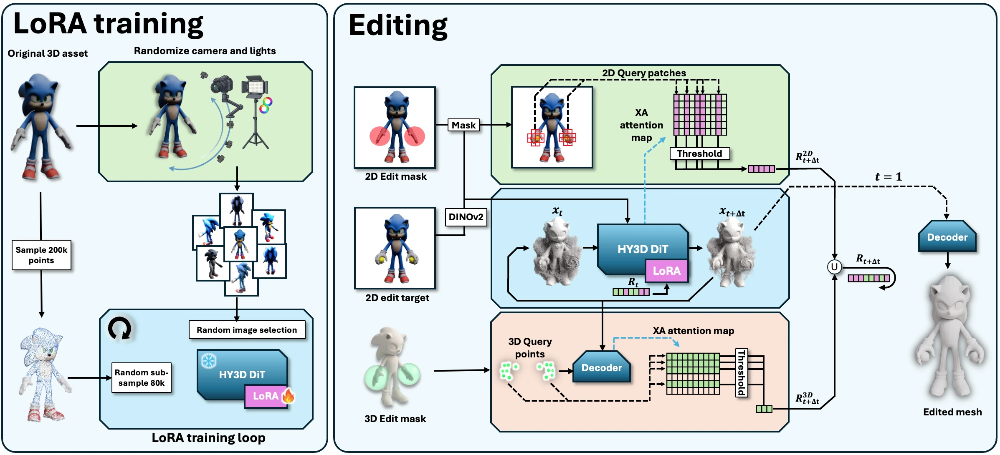
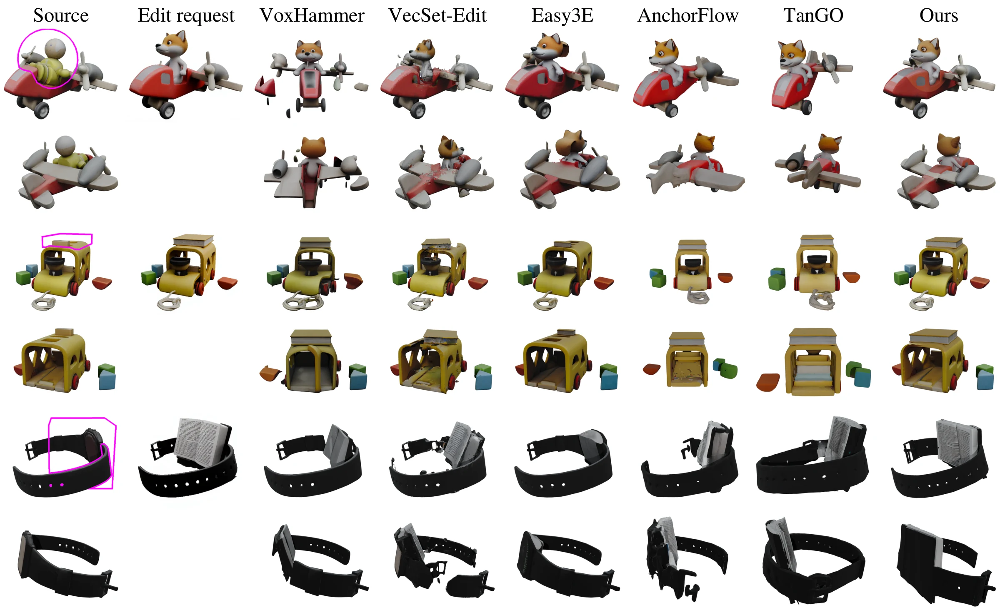
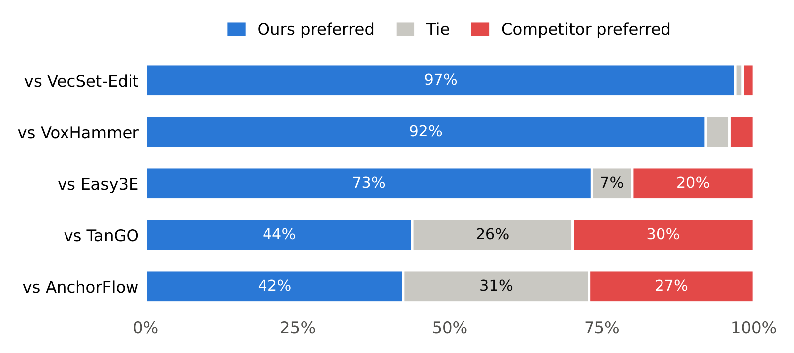

Abstract
Image-to-3D foundation models produce clean, detailed 3D assets, but offer no direct way to edit an existing one, be it generated or manually crafted. A natural route is to edit a 2D render of the asset and regenerate from it. Existing editors either hold part of the source's latent representation fixed, as frozen latent tokens or cached voxel features, which produces geometric artifacts and preserves nothing under a global edit, or couple the generation to the source's trajectory, which holds the edit back. We instead give the generator a prior for the specific asset: a low-rank adapter is fitted to the source object and applied at a variable strength per latent token, so that tokens in the edit region run without the adapter and follow the edited image, while every other token runs with it and reproduces the source. To decide which tokens belong to the edit, we use two probes: a 2D probe on the transformer's image cross-attention, which selects tokens by image content, and a 3D probe on the shape decoder's cross-attention, which grounds the region in 3D and reaches geometry the edited view does not show. Since VecSet tokens are not bound to fixed locations and drift during denoising, we re-estimate the assignment at every step. Because the adapter carries the asset's identity rather than any one region of it, a uniform strength also turns it into a control for global edits. On Edit3D-Bench, our method achieves the highest edit fidelity of all compared methods at numerically competitive preservation, and participants in a user study preferred its results in 88% of the comparisons that were not ties.
How it works

-
Personalize the generator to the asset
We fit a LoRA to the source asset on the Hunyuan3D 2.1 shape generator, much as image generators are personalized to a subject. It trains on renders of the asset from random cameras under random lighting. The personalized generator reproduces the whole asset from noise, including the parts that an edited image does not show.
-
Set the adapter's strength per token
The generator represents a shape as 4,096 latent tokens. The adapter sits in the transformer's feed-forward layers, which process each token separately, so each token can have its own adapter strength. Tokens in the edit run at strength zero and follow the edited image; all other tokens keep the adapter and reproduce the source. Attention still connects all tokens, so the edit and the rest of the asset are generated together, as one coherent shape.
-
Find the edit's tokens again at every step
A token has no fixed place on the shape and can move during sampling, so a selection made once goes stale. We select the edit's tokens again at each step while the shape takes form. A 2D probe picks the tokens that attend most to the edited part of the image. A 3D probe picks the tokens that points inside the 3D edit region attend to most in the shape decoder, so it also reaches empty space and parts the image does not show. Their union runs without the adapter at the next step.
Interactive comparison
All 33 cases from the paper's comparison figures, with and five baselines side by side: VoxHammer and Easy3E, which edit the sparse voxel latents of TRELLIS, and VecSet-Edit, TanGO and AnchorFlow, which edit VecSet latents as we do. Every baseline ran from its released code at its default settings, changed only to accept the benchmark's inputs. Drag any 3D panel to rotate it; with Sync cameras on, all panels follow.
Loading the interactive viewer…


generates geometry; its textures come from a pipeline we built on Hunyuan3D-Paint. TanGO and AnchorFlow output untextured meshes, so we texture them with the same pipeline. We could not obtain VoxHammer results on the global edits.
Results on Edit3D-Bench
Edit3D-Bench has 300 edits: 100 textured assets from Google Scanned Objects and PartObjaverse-Tiny, with three edits each. It has no ground-truth edited asset, and all its metrics except CLIP-T compare the result with the unedited source, so returning the source unchanged beats every published method on CD, PSNR, SSIM, LPIPS and DINO-I. We therefore add two metrics of our own: edit fidelity, measured against the edit request, and an exact surface distance for preservation.
| Benchmark metrics | Edit fidelity | Preservation | |||||||
|---|---|---|---|---|---|---|---|---|---|
| Method | CD ↓ | PSNR ↑ | SSIM ↑ | LPIPS ↓ | DINO-I ↑ | CLIP-T ↑ | DINOv2 ↓ | CLIP ↓ | Pres. ↓ |
| VoxHammer† | 0.0182 | 27.13 | 0.949 | 0.050 | 0.905 | 0.281 | 0.282 | 0.113 | 0.0127 |
| Easy3E | 0.0060 | 33.54 | 0.981 | 0.017 | 0.927 | 0.281 | 0.351 | 0.120 | 0.0012 |
| VecSet-Edit | 0.0175 | 26.82 | 0.951 | 0.049 | 0.886 | 0.280 | 0.388 | 0.128 | 0.0101 |
| TanGO | 0.0519 | 22.60 | 0.911 | 0.118 | 0.836 | 0.283 | 0.328 | 0.120 | 0.0429 |
| AnchorFlow | 0.0378 | 25.01 | 0.931 | 0.085 | 0.841 | 0.280 | 0.347 | 0.125 | 0.0295 |
| Ours | 0.0183 | 30.94 | 0.967 | 0.042 | 0.910 | 0.287 | 0.251 | 0.093 | 0.0119 |
Bold: best; underlined: second best. All 300 cases, except †VoxHammer, whose released code produced no output on 40 of them; on the other 260, reaches a CD of 0.0159 and a preservation error of 0.0102.
has the best edit fidelity under both DINOv2 (0.251) and CLIP (0.093), and the best CLIP-T (0.287). Easy3E stays closest to the source on every preservation metric. is second to it on PSNR, SSIM, LPIPS and DINO-I, and its geometric preservation (CD 0.0183, Pres. 0.0119) is close to that of VoxHammer and VecSet-Edit.
What each metric measures
- CD ↓
- Chamfer distance to the source mesh, outside the 3D edit region. It is computed from randomly sampled points, so two samplings of the same mesh already differ by about 0.005; smaller errors cannot be resolved.
- PSNR ↑, SSIM ↑, LPIPS ↓
- Agreement between renders of the result and of the source over 16 views, outside the 2D projection of the edit region.
- DINO-I ↑
- Similarity of DINOv2 features between whole renders of the result and of the source, edit region included.
- CLIP-T ↑
- Similarity between renders of the result and a text caption of the edited object.
- Edit fidelity: DINOv2 ↓, CLIP ↓
- Ours. We render the result from the camera of the edit request, crop the render and the edit request to the square around the 2D edit mask, and set everything outside the mask to the same gray. The score is one minus the cosine similarity of the two images' DINOv2 (or CLIP) class-token embeddings.
- Preservation (Pres.) ↓
- Ours. The exact point-to-surface distance between result and source, outside the 3D edit region: 200,000 points sampled on each surface, points inside the region discarded, averaged over both directions. Its noise floor is below 10−8.
The first six are the benchmark's own metrics, computed with its released evaluation code, unmodified, for every method.
User study
In a blind pairwise study on 28 cases, 16 local and 12 global edits, each case paired our result with that of one baseline. Participants saw the source asset, its rendered view and the edit request, with the two results on random sides. They chose the result that better applies the requested edit while otherwise staying faithful to the source, or declared a tie.
Eighteen participants cast 398 votes. Our result was preferred in 88.0% of the votes that were not ties (95% bootstrap interval over participants and cases: 77.6% to 95.2%).

BibTeX